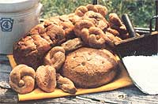

Here's a bread that merits the title "the staff of life"
Certainly we can't, and most people wouldn't want to, "live by bread alone" ...but the late Clive M. McCoy-who was a professor of animal nutrition at Ithaca, New York's Cornell University-made a breakthrough nearly half a century ago that did a lot to improve the nutritional value of the world's most popular staple food. Without a doubt, the bread he developed will provide you and your family with many of the essential nutrients you need for good health.
The history of Dr. McCoy's bread began when the nutritionist added soybean products, dry milk, and wheat germ to the food he gave to his laboratory animals (and to the 40 or so stray dogs he'd befriended). Over the years, his tests showed that the diet-which limited calories but provided abundant minerals, vitamins, and proteins-often allowed the beasts to live twice as long as did those that regularly ate their fill of a "normal" diet.
Now McCoy was deeply interested in the improvement of health among people as well (particularly those folks in the last third of their lives), and he figured that if his formula worked for dogs and rats, it should help human beings, too. And since bread was one of the least expensive and most universally eaten foods, he decided to add the nutrients to the staple edible.
His original recipe, which soon became known as "Cornell Bread", was made from unbleached flour, because-though McCay considered whole grain superior-he was realistic enough to know that the people of his day were pretty much hooked on white bread. In the course of his research, he proved that rat could thrives and prolong their lives and health on an exclusive diet of Cornell Bread and butter, while the growth of rodents fed exactly the same amount of store-bought bread with butter was stunted, and such animals soon sickened and died.
SLOW TO CATCH ON
These astonishing results led the professor, in the late 1930's, to offer his recipe, free-of-charge, to bakeries in a low-income section of Brooklyn ...in hopes of improving the health of the area's impoverished residents. (In return, he requested only-again, proving himself to be ahead of his time-that the ingredients and their amounts be listed on the label.) Unfortunately, although the bakers were agreeable, most of their customers preferred the white "sponge" bread to which they were accustomed, and refused to purchase the wholesome loaves. (Later, however, McCoy did convince all of New York's state mental hospitals, and some homes for the aged, to include the bread on their menus.)
Still, a few bakery owners scattered throughout the state became enthusiastic about his product and sold it-in sufficient amounts to justify keeping the loaves on the market-under the name of "Triple-Rich Bread", a label which referred to its three nutritious additions: wheat germ, a source of iron, vitamin E, and the B vitamins ...dry skim milk, which has about twice the protein value of meat as well as liberal amounts of calcium and riboflavin ...and soy flour, a rich protein concentrate that supplies the amino acids lacking in wheat and thus yields a complete protein. (McCoy preferred unsaturated, full-fat soy flour to the defatted version, because he thought the former made baked goods more attractive and tastier.)
Oddly enough, because the commercial version of Cornell Bread contained extra healthful ingredients, that era's Food and Drug Administration decided that it couldn't properly be called "bread", but must be labeled (would you believe?) "artificial"!
WE KNOW BETTER NOW ...DON'T WE?
Fortunately, nutritional awareness has come a long way since the 1930's, and more and more people have begun to recognize the truth in what Clive McCoy told us so many years ago: "Lack of information is not the problem in nutrition today. The vital blocks are an indifference to learning, lack of self-discipline in food selection, and the failure to realize that what one eats affects the health."
Back in 1955, in order to increase the public's awareness of good nutritional habits, McCoy-with the help of his wife, Jeanette (herself a former member of Cornell's nutrition staff)-published You Can Make Cornell Bread, a small booklet that contained the basic recipe and a number of variations on the theme. In fact, as the publication notes: "You can make cakes, cookies, pie crust, and other baked products that will contain more complete protein, more minerals and vitamins from your own favorite recipes ...if you will put 1 tablespoon of soy flour, 1 tablespoon of dry milk, and 1 teaspoon of wheat germ in the bottom of the cup when you measure each cup of flour." (The booklet, which has been reprinted many times, is still available from Mrs. Clive M. McCoy, Dept. TMEN, 39 Lakeview Lane, Englewood, Florida 33533-for $2.70 postpaid.)
But of all the recipes included in the collection, MOTHER's favorite is the one for Cornell Whole Wheat Bread. To make it, mix together 4-1/2 cups of whole wheat flour, 1/2 cup of full-fat soy flour, 3/4 cup of nonfat dry milk, 3 tablespoons of wheat germ, 2 tablespoons of nutritional yeast, 2 teaspoons of salt, 2 tablespoons of sesame seeds, 3 tablespoons of Mexican pumpkin seeds or sunflower seeds or nuts, 1/4 cup of raisins, and 2 packages or 2 tablespoons of dry active yeast.
When that's done, set aside the mixture, and in a large bowl-combine 1/4 cup of brown sugar, 1/4 cup of dark molasses, 2 cups of warm water (120° to 130° F) , and l egg. Add the dry ingredients gradually to the liquid, beating as long as possible with an eggbeater or an electric mixer. When the batter becomes too thick for that, continue beating, by hand, for at least five minutes ...until the dough is firm and elastic. Turn it onto a floured board. Then, using more flour if necessary, knead and shape the dough into a smooth ball, and place it in a greased bowl. Let it rise in a warm place for about 45 minutes or until it's doubled in size ...then punch it down, turn it over, and let it rise another 20 minutes.
At that point, divide the dough in half and let it rest, for 10 minutes, while you grease two 4-1/2" X 8" loaf tins. Shape two loaves ...let them rise for 30 minutes ...and then bake them at 350°F for about an hour, or until the loaves sound hollow when tapped. Finally, brush their tops with melted butter ...remove the bread from the pans ...and let it cool.
You'll find that these tasty, nicely textured loaves freeze well ...make delicious toast ...and go a long way toward improving your family's nutritional habits and, possibly, their health.
|
 STAFF PHOTO |
|
|